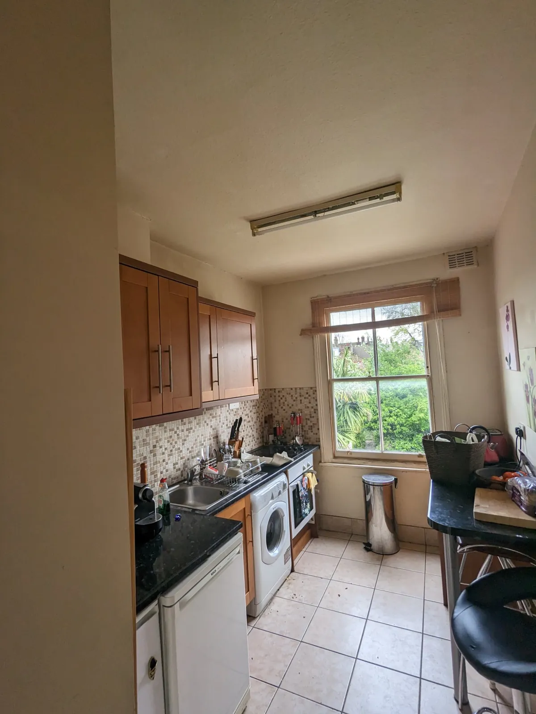
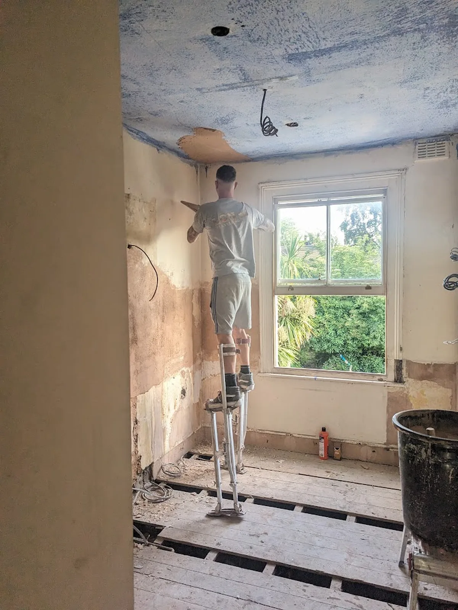
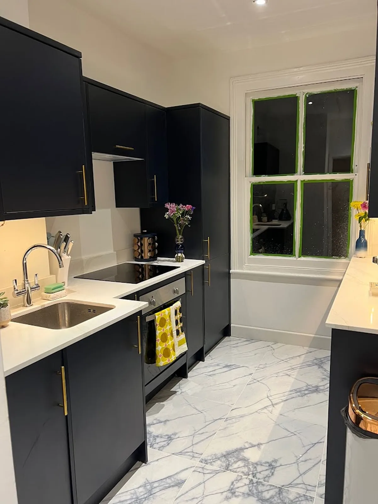

KITCHENS
Kitchen Renovation & Installation in Fulham
New kitchens planned, installed and finished by one local team, from the first measure to the last bead of silicone.
WhatsApp NicholasFrom our shop at 287 Munster Road, Fulham. We also cover Hammersmith, Parsons Green, Chelsea, Kensington, Putney, Wandsworth, Chiswick, Richmond, Wimbledon and more. All areas

A kitchen is mostly services and preparation. Before a single cabinet goes in we check where the water, waste, gas and power run, how straight the walls are and whether the floor is level enough for a long run of units.
Because we already do the plumbing, electrics, plastering, tiling and decorating, you are not chasing four trades to turn up in the right order. One person plans the sequence and one team carries it out.



BeforeDuringAfterOne of our kitchens
Part of a full renovation. The old kitchen was stripped back to the brick and floorboards, then rebuilt with new electrics and plumbing, a new boiler, skimmed walls and ceiling, a new radiator, dark units with integrated appliances, Silestone worktops and marble-effect floor tiles.
- Old units, worktops, appliances and splashback tiles stripped out, back to the brick and floorboards.
- New electrics and plumbing throughout, and a new boiler fitted.
- Walls and ceiling skimmed, and a new radiator fitted.
- Dark units with brass handles and integrated appliances, finished with Silestone worktops and the sink set into the worktop.
- New floor laid in large marble-effect porcelain tiles.
Areas we cover for kitchens
From our shop at 287 Munster Road, Fulham. Each area page has more about the homes there and what we do in them.
Kitchen layouts
The shape of the room usually decides the layout. We check where the water, waste and power can run before you choose.
Galley
Two runs facing each other. Efficient in narrow rooms and flats, with everything within a step or two.
L-shape
Units along two walls, leaving open floor for a table. Works in most square rooms.
U-shape
Units on three walls for the most worktop and storage. Needs enough width to open doors facing each other.
Island or peninsula
Extra worktop and seating. Needs space to walk round it, and power or water to an island has to be planned under the floor.
Worktops
Stone, quartz and sintered worktops are templated once the units are fixed, then cut and fitted. Laminate and wood are cut on site.
| Worktop | Look and feel | Heat and scratches | Upkeep |
|---|---|---|---|
| Laminate | Wide choice of colours and stone or wood effects | Use trivets; can mark from knives and hot pans | Wipe clean; joins and edges need care around the sink |
| Solid wood | Warm and natural | Marks more easily, but can be sanded back | Oil regularly, especially around the sink |
| Quartz (e.g. Silestone, Caesarstone) | Consistent stone look, many colours | Very scratch resistant; avoid hot pans straight on it | Non-porous, so no sealing needed |
| Sintered stone and porcelain (e.g. Dekton) | Thin, modern slabs | Very hard and heat resistant | Very low upkeep; edges can chip if knocked hard |
| Granite | Natural stone, every slab different | Heat and scratch resistant | Seal from time to time |
| Marble | Classic natural stone | Softer; marks from acids such as lemon and wine | Seal regularly; it develops a patina |
Sinks and taps
Undermount sink
Fixed under a stone, quartz or sintered worktop, so you can wipe straight into it. Not usually suited to laminate.
Inset sink
Drops into a cut-out from above. Works with any worktop, including laminate, and is the easiest to replace.
Belfast or butler sink
A deep ceramic sink set into the front of the units. Needs its own base unit and a strong frame.
Boiling-water tap
Needs a tank in the base unit and a socket nearby, so it is planned before the units go in.
Order of work
- Survey and measureRoom, services, and how you cook and use the space.
- Strip-outOld kitchen removed and taken away.
- First fixPipework, waste and new circuits run while the walls are open.
- Walls and floorMade good, plastered or boarded and levelled.
- UnitsFitted level and square.
- Worktops and sinkTemplated, then fitted with the sink and hob.
- Second fixTaps, appliances, sockets and lighting connected.
- Splashback, tiling and decoratingThen a final check with you.
You get a written programme with your quote, so you know the order of work before we start.
Questions
Can you install a kitchen I have bought elsewhere?
Yes. Send us the plan and the unit list and we will check it against the room before delivery day.
How long does a kitchen take?
Every kitchen is different. You get a written programme with your quote, so you know the order of work before we start.
Can I keep using the house during the work?
Usually, yes. We can set up a temporary sink or keep the old one connected for as long as possible.
BATHROOMS
Bathroom at the same time?
Many customers have us do the kitchen and the bathroom in one programme, sharing the strip-out, the skip and the plumbing visits.
Bathroom renovations